ParPlot Tutorial
Input data "Solutions File"
Input data "Kendall Value"
F01 Upload data
F02 Grouping (bars)
F03 Brush
F04 Keep
F05 Exclude
F06 Show / Hide selected items
F07 Selection from data grid
F08 Print Screenshot
F09 Export active data
F10 Export selected items
F11 Data grid explorer
F12 Remark alternative
F13 Search by name
F14 Drop-down menu Kendall tau (slider)
F15 Drop-down menu dimensions (axis, slider)
F16 Clear search
F17 New Project
F18 Hide Ticks / Show ticks
F19 Dark / Light
Input data "Solutions File" (.csv)
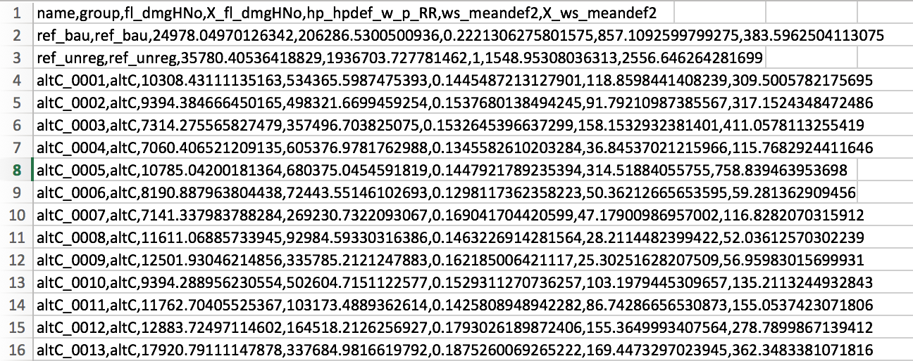
This file must contain all the information related with the viable solutions. Each of the solutions is defined with a name, a group (defined by a name that group any special characteristic), and the numerical values related to each one of the indicators (that will be represented at each one of the axes in the parallel plot) that generates a complete solution:
-The first row of the file has to be defined as: "name,group,indicator 1,inticator 2,....,indicator n".
-In the next rows the solutions are defined following the order of the header (first row).
At the same time, this file can contain some reference solutions, that could represent restrictions, suggestions or specific solutions that are used as layouts during the negotiation process:
-The reference solutions name have to contain the prefix "ref_"
Back to list of functions
Input data "Kendall Value"
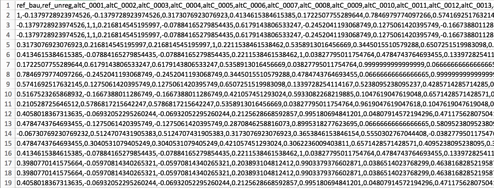
ParPlot folder contains an auxiliary MatLab code that allows to calculate the mean Kendall tau index from the Kendall matrix, obtaining one value for each solution that represents the concordance between the solutions that contains the “projections file” previously explained (Once the MatLab code is ran it adds the Kendall value to the “projections file” as a new index).
The figure above shows a section of a symmetric Kendall matrix, where all the values of the diagonal are equal to one (because the concordance of each solution in relation to itself is one) and the other spots show the value that corresponds to the concordance of two of the solutions (the one corresponding to the column and the one corresponding to the row):
-The first row of the file contains the names of the solutions: "name 1, name 2, ... ,name n"
-The next rows corresponds to the values of concordance of the Kendall Matrix
To use the Kendall value in your analysis, run the MatLab code and use its output file as the input file for ParPlot.
Back to list of functions
F01 Upload data
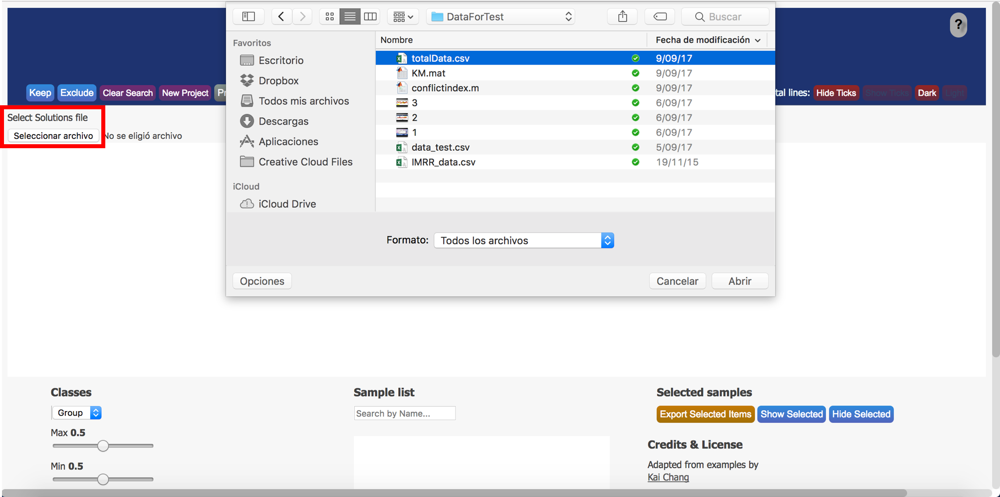
To upload the .csv file that contains the set of solutions
-Click on the button "Browse" under the label "Select Solutions file"
-Select the .csv file that containds the set of solutions
-Click "Open"
Back to list of functions
F02 Grouping (bars)
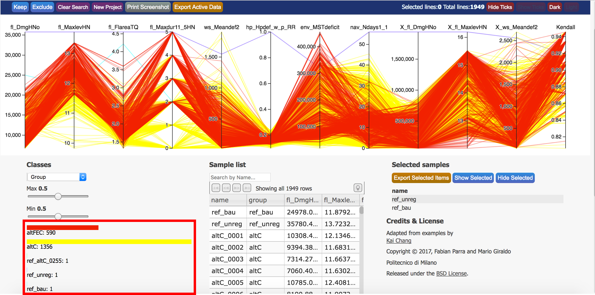
Once the data is uploaded, a bar chart is created in the section "Classes". These bars show the different "groups" of data, and the number of solutions per group. The colors of the bars correspond with the colors of the represented solution in the parallel coordinates plot.
Back to list of functionsF03 Brush
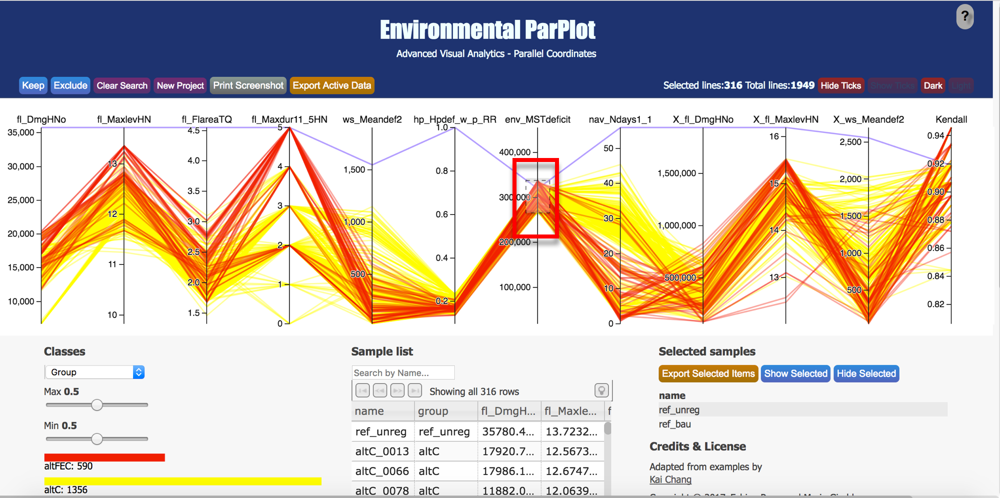
To select a set of solutions:
-Brush: Drag vertically along an axis.
-Remove Brush: Tap the axis background.
Back to list of functionsF04 Keep
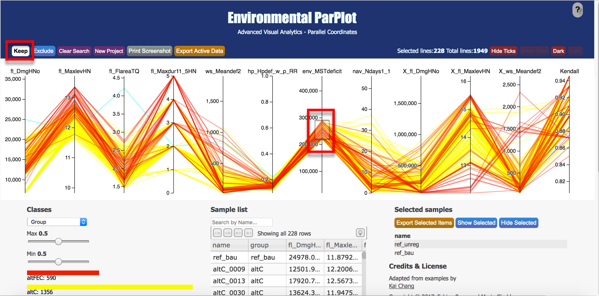
To select a set of solutions and delete the others:
-First select the wanted set of solutions using "F04 Brushing" in one or more axes
-Then click the button "Keep"
-Finally remove brush by tapping in the axis/axes background
Back to list of functionsF05 Exclude
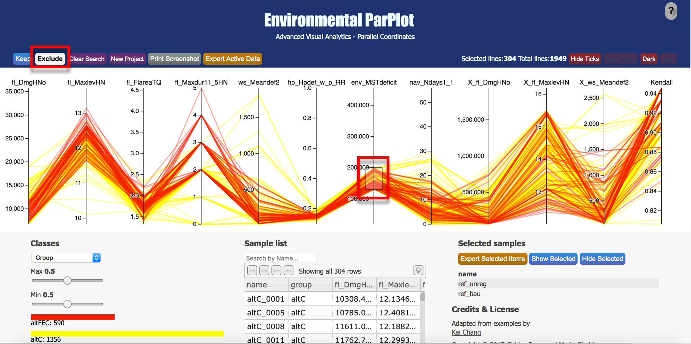
To delete a selected set of solutions:
-First select the NON wanted set of solutions using "F04 Brushing" in ONE axis
-Then click the button "Exclude"
-Finally remove brush by tapping in the axis background
Note: To remove sets of solutions according more than one axis, it is necessary to do this process one axis at a time
Back to list of functionsF06 Show / Hide selected items
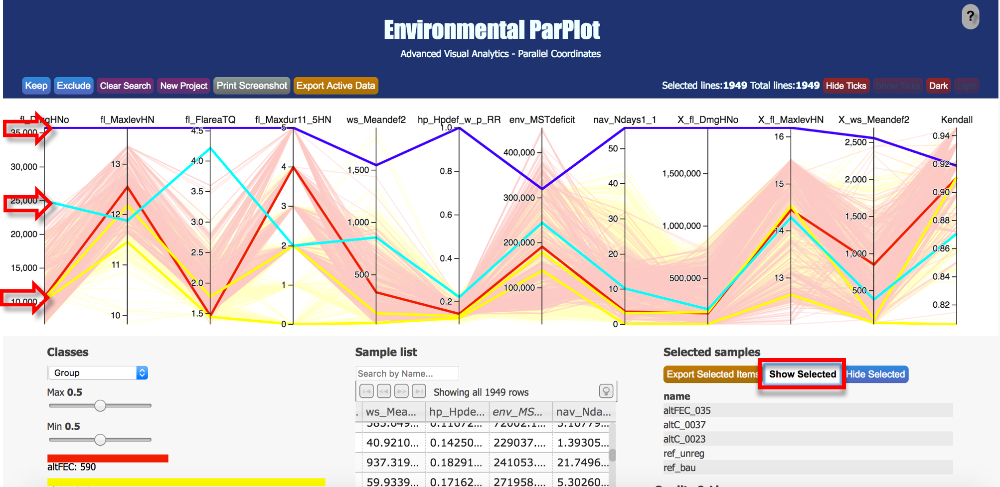
-To show(underline) the set of selected/reference solutions, click on "Show selected".
-To hide(show all the solutions at the same level) the set of selected/reference solutions, click on "Hide selected".
Back to list of functionsF07 Selection from data grid
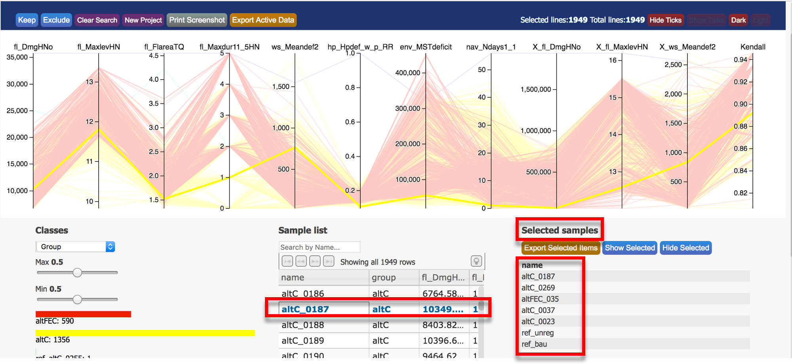
To select a specific solution.
-Click on the specific solution on the data grid located at the "Sample List" section.
-This solution will be added to the list of selected solutions located at the "Selected Samples" section.
To delete one of the selected solutions from the "Selected Samples" list
-Double click on the solution listed at "Selected Samples".
Back to list of functionsF08 Print Screenshot
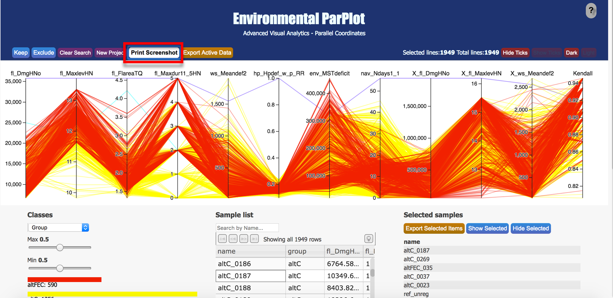
To download an image of the whole displayed screen:
-Click on the button "Download Screenshot"
-Select to save as a "PDF" file or print
Back to list of functionsF09 Export active data
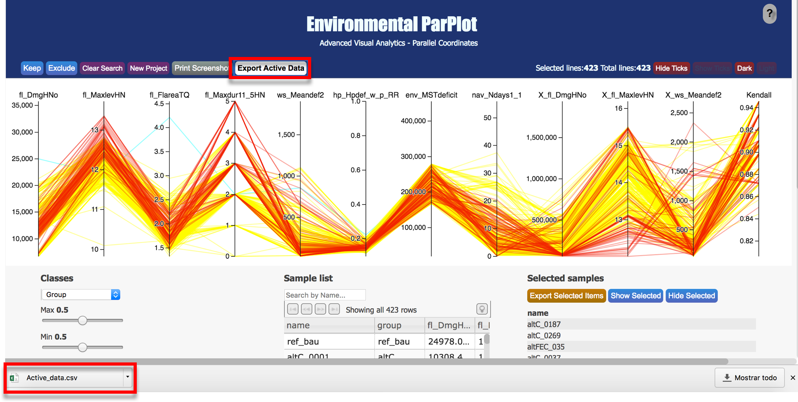
To download the active data (as a .csv file) that is still shown in the parallel coordinates plot:
-Click on the button "Export Active Data"
The .csv file will be automatically saved as "Active_data.csv" in the "Download" folder of your computed
Back to list of functionsF10 Export selected items
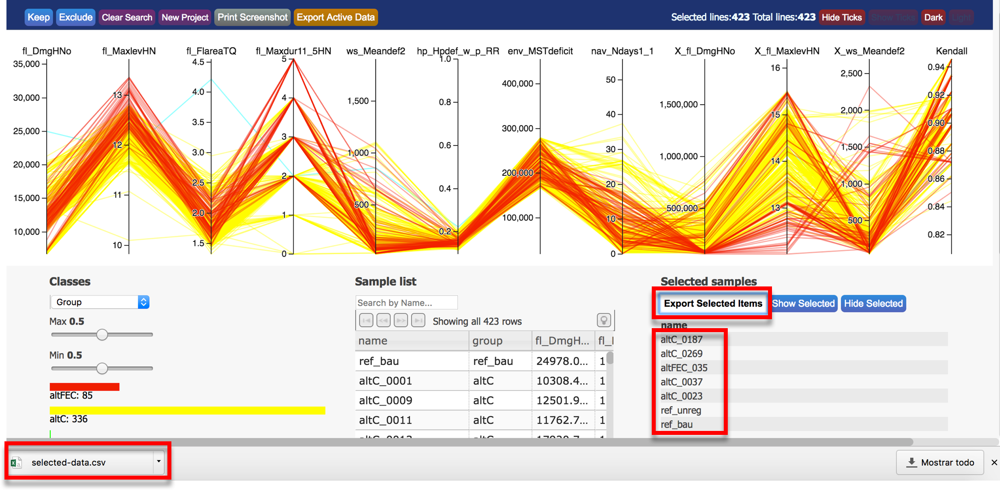
To download the selected data (as a .csv file) shown in the "Selected samples" list:
-Click on the button "Export Selected Items"
The .csv file will be automatically saved as "selected_data.csv" in the "Download" folder of your computed
Back to list of functionsF11 Data grid explorer
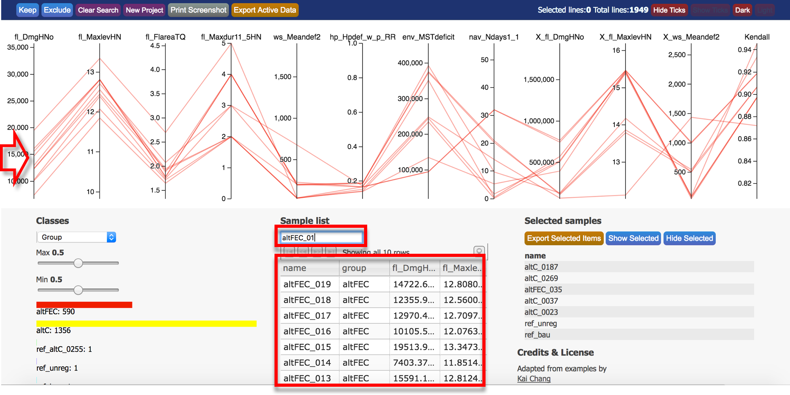
The grid located at "Sample list" has different functionalities:
-It is possible to scroll up and down to navigate around all the solutions. And right and left to see all the information related to the solutions
-By clicking the label at the top the list is sorted in alphabetic order.
It also has the possibility of sorting and navigate the grid in different ways:
-Click on the bulb icon located in the top right corner of the grid.
-Select the number of samples to locate per page (25, 50, 100).
-Navigate between pages using the arrows located at the top left corner of the grid.
Back to list of functionsF12 Remark alternative
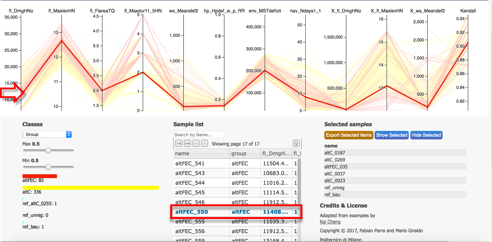
To underline a specific solution in the parallel coordinates plot, it can be place the mouse over the solution listed in both grids, the one located at "Sample list" and "Selected items"
Back to list of functionsF13 Search by name
To search a specific solution or group of solutions by name:
-Write the name in the text box located at "Sample list" section. The solutions that match with the written name show up in the grid.
-Click on any of the axis of the parallel coordinates plot to update it with the matching solutions.
Back to list of functionsF14 Drop-down menu Kendall tau (slider)
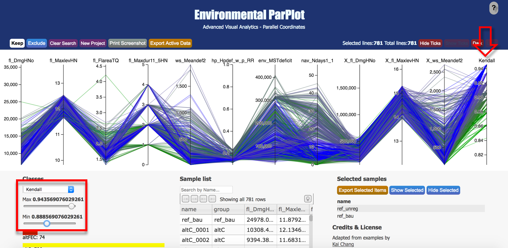
From the Kendall Matrix, ParPlot assigns a mean value to each one of the solutions.
To do a graphical concordance analysis:
-Select "Kendall" on the drop-down menu located in the "Classes" section.
-Update "Max" (Maximum limit value) and "Min" (Minimum limit value) sliders located in the same section by setting them in a new position.
The solutions are set with a corresponding color defined by the Kendall mean value assign, in a range of colors from green(corresponding to the Minimum limit value) to blue(corresponding to the Maximum limit value).
Back to list of functionsF15 Drop-down menu dimensions (axis, slider)
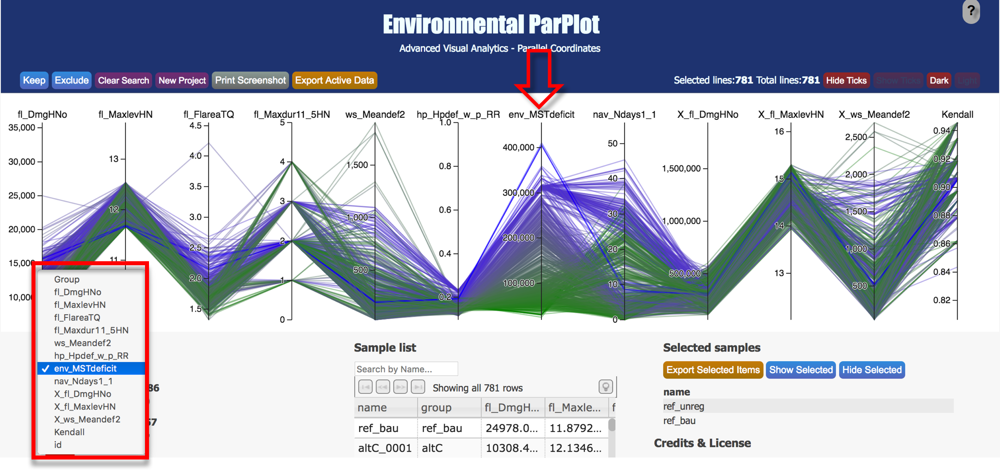
To track the behaviour of the solutions along the axes in reference to a selected axis:
-Select the index (axis) of interest on the drop-down manu located in the "Classes" section.
-Update "Max" (Maximum limit value) and "Min" (Minimum limit value) sliders located in the same section by setting them in a new position.
The solutions are set with a corresponding color, in a range of colors from green(corresponding to the Minimum limit value) to blue(corresponding to the Maximum limit value).
Back to list of functionsF16 Clear search
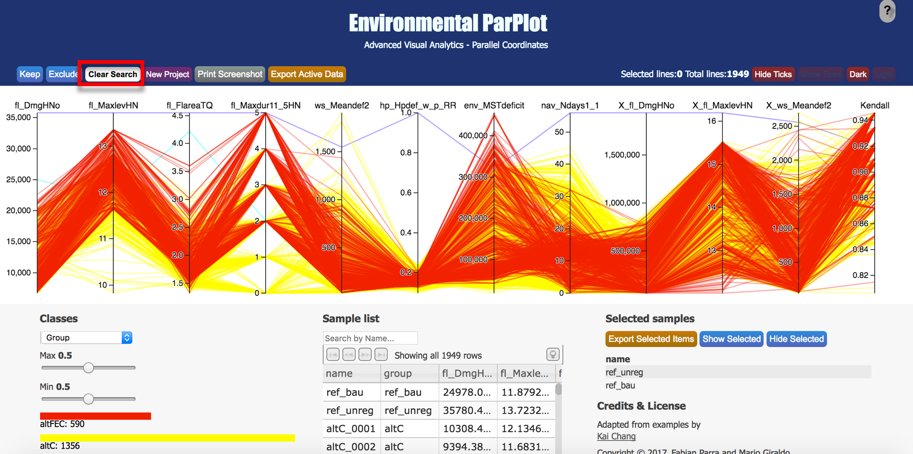
To go back to the initial uploaded data and start the analysis process from the beggining:
-Click on the button "Clear Search"
Note: This function also deletes the list of selected solutions.
Back to list of functionsF17 New Project
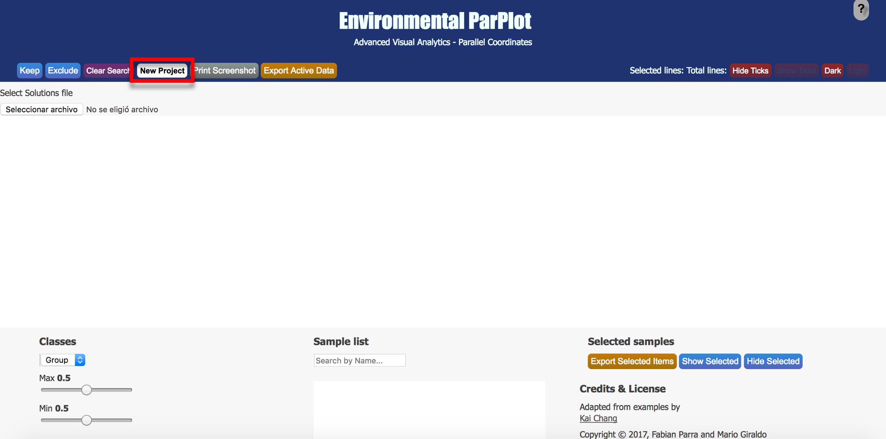
To upload a different file and start the analysis process from the beginning:
-Click on the button "New Project".
Back to list of functionsF18 Hide Ticks / Show ticks
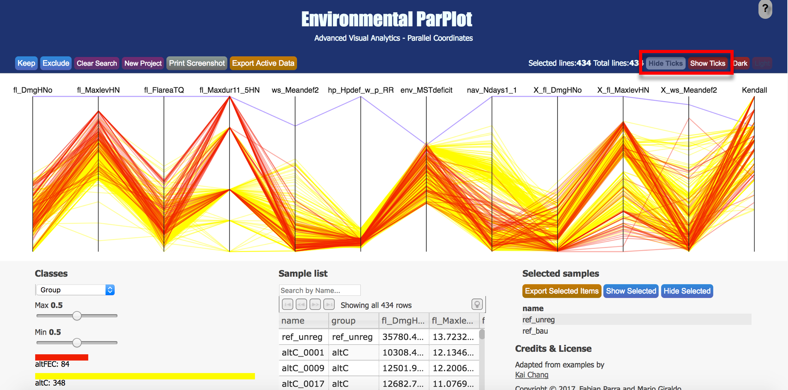
-Click on the button "Hide Ticks" to hide the axes values on the parallel coordinates plot
-Click on the button "Show Ticks" to show the axes values on the parallel coordinates plot
Back to list of functionsF19 Dark / Light
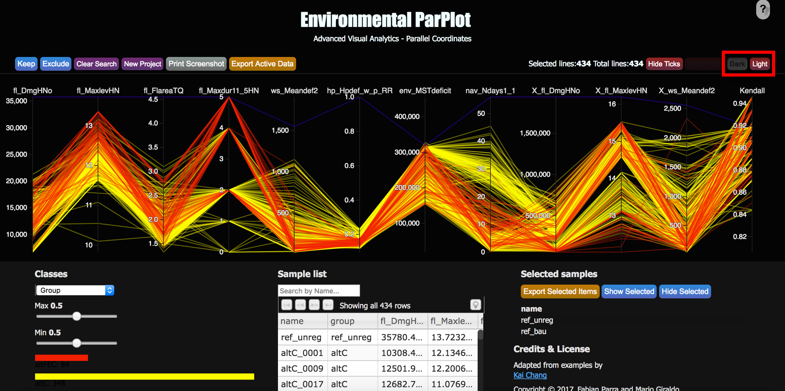
-Click the button "Dark" to change the background to black color
-Click the button "Light" to change the background to white color
Back to list of functions